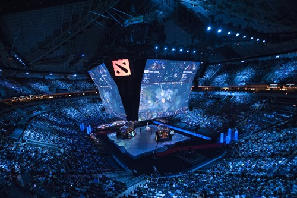

Кіберспорт - спортивні змагання з відеоігор засновані в 1997 році. Почався цей вид спорту з гри Quake, яка мала режими мережевоъ гри LAN або Internet. Першою лігою електронного спорту стала - Cyberathlete Professional League (CPL)

Міжнародний щорічний турнір Dota 2 (The International)
Великі змагання проводяться в спеціальних місцях, де публіка може спостерігати за гравцями, що сидять за комп'ютерами, а хід змагань відстежувати на великому екрані, де транслюється ігровий процес. У Південній Кореї, через велике число глядачів, подібні змагання проводять на стадіонах. Менш масштабні змагання відбуваються в комп'ютерних клубах. Крім того, змагання можуть проводитися через Інтернет.
Гра через Інтернет має ряд недоліків. У різних гравців можуть бути неоднакові затримки передачі інформації через глобальну мережу в зв'язку з її неоднорідністю. Під час гри через Інтернет складно виявити шахрайство партнерів. Натомість, під час гри через локальну мережу всі гравці присутні в одному приміщенні під наглядом організаторів змагання, тому шахраювати набагато важче. Локальна мережа зводить нанівець і проблему затримок, оскільки має достатню і однакову для всіх пропускну здатність. Гра через LAN створює специфічну атмосферу змагання завдяки особистій присутності всіх учасників і глядачів, яка не може бути досягнута за допомогою Інтернету.
Для кіберспорту підходять такі жанри відеоігор, як шутери від першої особи, стратегії реального часу і спортивні симулятори як найбільш видовищні і динамічні. Подібно до звичайного спорту, конкретні ігри називаються дисциплінами.